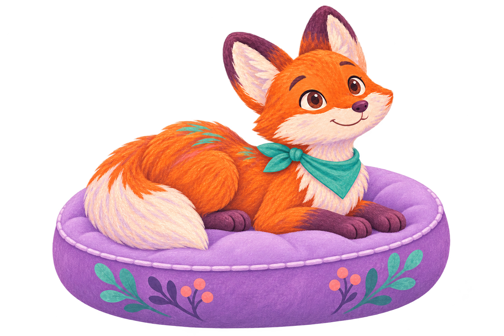
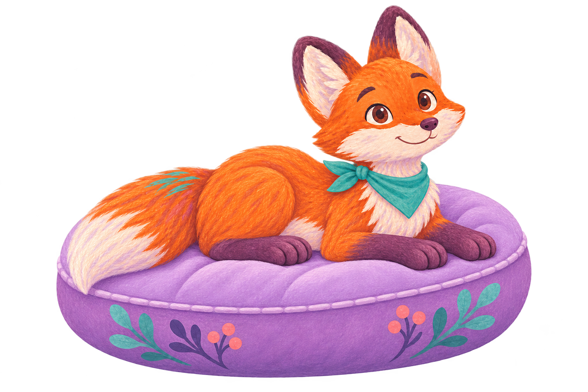
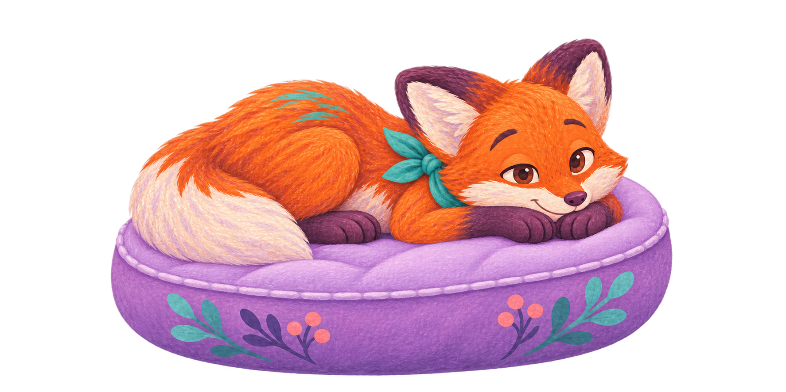
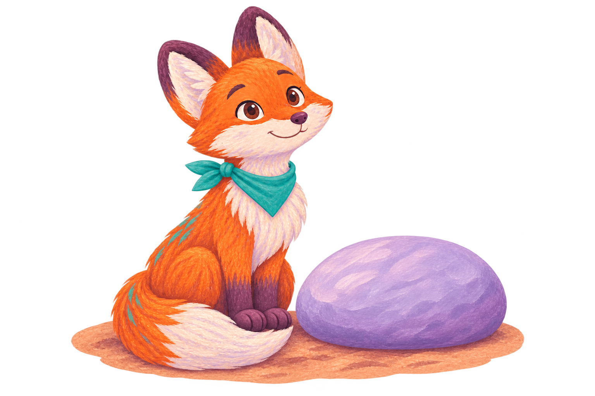
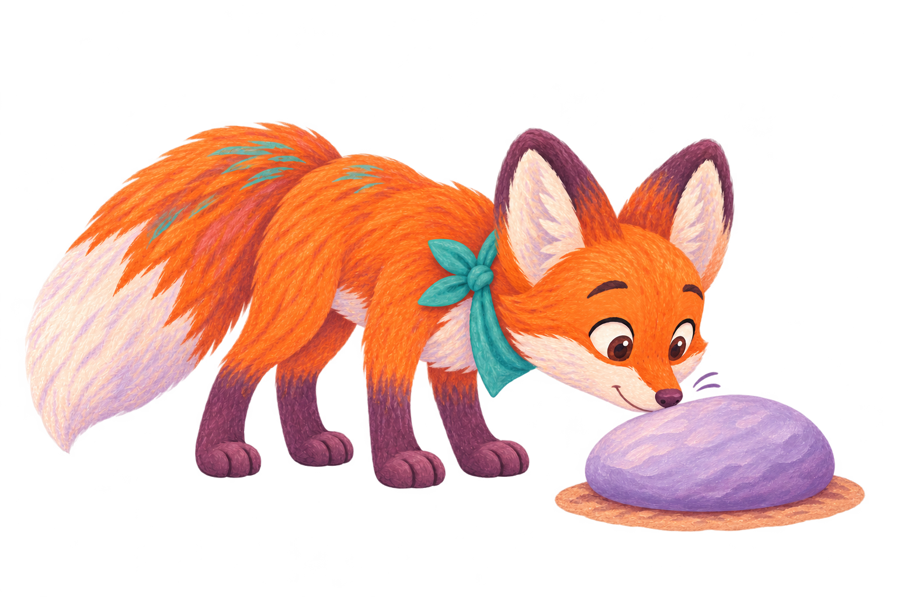
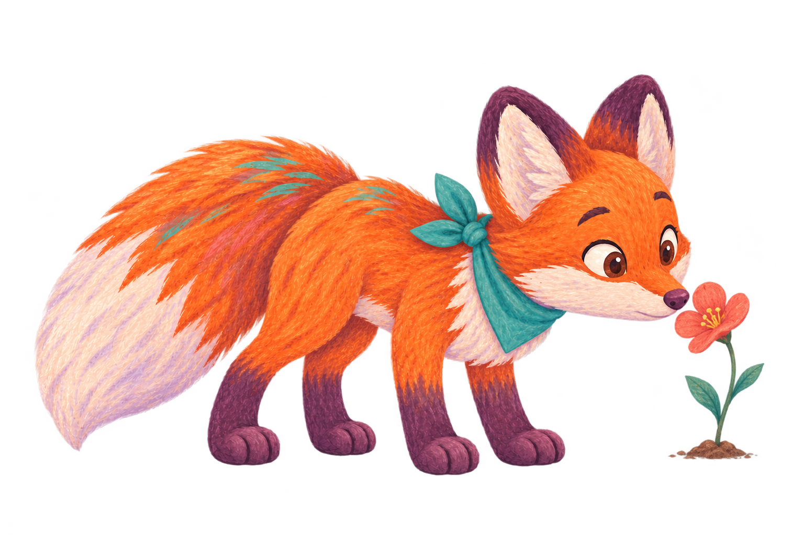

Altı ayrı çizim; kaynak metinle birlikte inceleme paketi. Deniz yalnız örnek kişiselleştirmedir. Yeni runtime eşleşmesi henüz yok.
Minderde uyanık

Sayfa 1 · pilot56_book_u1_fox_event02_v1
Orman Kıyısındaki Oda’da akşam ışığı yumuşaktı. Deniz ellerini örtüsünün üstüne koydu. Tarçın minderinde yatıyordu. Burnu her zamanki gibi kıpır kıpırdı.
Minderde yatan, burnu hareketli ve uyanık Tarçın.Kuyruk minder üzerinde

Sayfa 5 · pilot56_book_u1_fox_event02_v1
Tarçın da kuyruğunu minderin üstünde yavaşça kaydırdı. Hış… Kuyruğu da yumuşak bir ses çıkardı. "Bak, benim de sesim var," dedi. Deniz'in gözleri parladı. Tarçın’ın kulakları dikildi.
Kuyruğunu minder üzerinde kaydırır; kulakları diktir.Burun patiler arasında

Sayfa 7 · pilot56_book_u1_fox_event02_v1
Tarçın kuyruğunu durdurdu. Burnunu patilerinin arasına gömdü. Deniz'in elleri de, Tarçın'ın kuyruğu da dinleniyordu. Odaya derin bir sessizlik yayıldı.
Burnu patilerinin arasında; ikisi de hareketsiz dinlenir.Taş yanında oturma

Sayfa 5 · pilot56_book_a1_fox_event02_v1
Deniz ilk adımını atıp taşın yanında durdu. Toprak sıcak ve düzdü. Gözleri ışığa yavaş yavaş alıştı. Tarçın da taşın yanına oturup kuyruğunu dolandırdı.
Çocuk taş yanına varır; Tarçın oturur ve kuyruğunu dolandırır.Taşı koklama

Sayfa 8 · pilot56_book_a1_fox_event02_v1
Aynı düz yoldan gölgeli patikaya döndüler. Deniz yolda taşa bir kez daha dokundu. Tarçın taşı yine kokladı. "Hâlâ güneş kokuyor," dedi.
Dönüş yolunda aynı taşı yeniden koklar; taş güneş metaforunun maddi karşılığına dönüşmez.Çiçeği koklama

Sayfa 8 · pilot56_book_l1_fox_event02_v1
Deniz patikaya dönerken yaprağı dalında bıraktı. Tarçın yanında ilerledi. Yolda bir çiçek görünce durdu. Bu kez hapşırmadan kokladı ve gururla Deniz'e baktı.
Yaprak dalında kalır; Tarçın yolda gerçek çiçeği koklar, hapşırmaz.